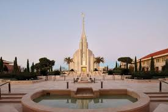
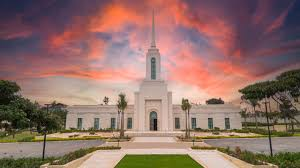
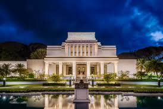
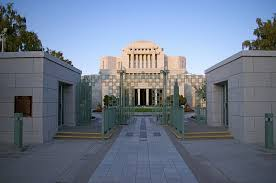
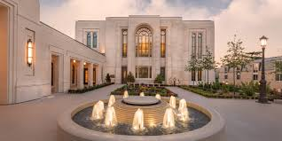
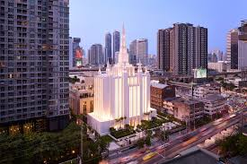

Temple Album
☰
Home
Old
New
Large
Small
Temples of The Church
Salt Lake Temple

Rome Italy Temple

Nairobi Kenya Temple

Laie Hawaii Temple

Cardston Alberta Temple

Paris France Temple
Accra Ghana Temple

Bangkok Thailand Temple
Freiberg Germany Temple